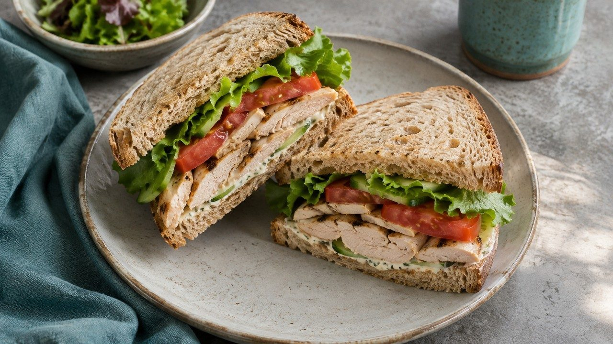

악액질 검사
체중과 식사 변화에 관한 검사 정보를 안내합니다.
체중과 식사 변화에 관한 검사 정보를 안내합니다.
상담에서 확인할 항목과 방문 전에 준비할 내용을 안내합니다.

상담 전 기록
최근 식사 횟수와 먹기 어려운 상황, 체중을 측정한 날짜를 가능한 범위에서 적어 주세요. 정확한 수치를 모르면 추정하지 않아도 됩니다.
검사 일정
검사 종류와 준비 방법은 예약할 때 확인해 주세요. 식사나 복용 약을 임의로 변경하지 말고 별도 준비가 필요한지 병원에 문의해 주세요.
결과 상담
결과를 들을 때 검사 항목과 다음 상담이 필요한지 확인해 주세요. 식품 제한이나 식사 계획은 의료진 또는 영양 담당자와 상의해 정해 주세요.
자주 묻는 질문
상담 전에 어떤 기록을 남기나요?
식사 횟수와 섭취량, 식욕이 달라진 날짜를 기록해 주세요.
체중은 언제 재면 되나요?
측정 날짜와 함께 비슷한 시간대와 조건에서 잰 기록을 준비해 주세요.
식사 중 불편도 알려야 하나요?
메스꺼움이나 삼킴 어려움 등 식사에 영향을 준 증상과 시점을 메모해 주세요.
어떤 검사를 받게 되나요?
필요한 검사와 준비 사항은 진료 목적과 기록을 확인한 뒤 안내받습니다.
보충식을 사용해도 되나요?
보충식이나 식사 조절은 현재 진료 상황을 확인한 뒤 의료진과 상의해 결정해 주세요.
복용약 정보가 필요한가요?
처방약과 건강기능식품의 이름, 복용 방법을 상담 때 알려 주세요.
기록은 며칠 동안 해야 하나요?
기록 기간과 다시 확인할 날짜는 진료 중 담당자와 정해 주세요.
보호자 기록을 가져가도 되나요?
환자 동의 아래 식사를 함께 준비하는 보호자의 기록도 상담에 사용할 수 있습니다.
상태가 갑자기 달라지면 어떻게 하나요?
다음 예약까지 기다리지 말고 병원에 연락해 진료 안내를 확인해 주세요.
비용은 어디서 확인하나요?
검사 비용과 보험 적용 여부는 진행 전에 접수 담당자에게 문의해 주세요.
식사 일지 작성
식사한 시각과 먹은 음식, 대략적인 양을 날짜별로 기록해 주세요. 기록이 빠진 날은 나중에 추정해 채우지 말고 기억나는 범위만 상담에서 설명해 주세요.
체중 자료 준비
체중을 잰 날짜와 측정 조건을 함께 적어 주세요. 측정값이 없으면 숫자를 만들어 쓰지 말고 옷이나 식사량처럼 확인한 변화만 의료진에게 전달해 주세요.
씹기와 삼키기 불편
음식을 씹거나 삼킬 때 불편이 있었다면 먹은 음식의 종류와 발생 시점을 기록해 주세요. 증상이 갑자기 심해지거나 물을 삼키기 어려우면 진료 예약을 기다리지 말고 의료기관에 연락해 주세요.
검사 결과 보관
검사 결과를 받으면 검사 날짜와 항목 이름을 같이 보관해 주세요. 이전 결과가 여러 장이면 최신 자료와 과거 자료를 구분해 상담 담당자에게 전달해 주세요.
| 기록할 내용 | 상담에서 확인할 점 |
|---|---|
| 식사 횟수와 시간 | 평소 식사 시간과 달라진 때 |
| 체중 측정일 | 측정 날짜와 기록 여부 |
| 식사 중 불편 | 불편이 시작된 시점 |
상담 전 기록 정리
식사 시간과 대략적인 양, 먹기 어려웠던 음식이나 상황을 날짜와 함께 적어 주세요. 체중을 측정했다면 측정 날짜도 기록해 주세요. 기록이 없는 날은 수치를 짐작해 쓰지 말고 기억나는 변화만 상담에서 설명해 주세요.